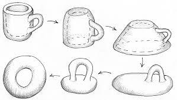
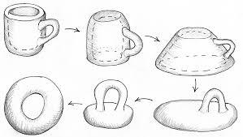

The AaBbCc program
You are given four integer values a, b, c and m.
Check if there exists a string that contains:
* a letters 'A';
* b letters 'B';
* c letters 'C';
* no other letters;
* exactly m pairs of adjacent equal letters (exactly m such positions i that the i-th letter is equal to the (i+1)-th one).
Input
The first line contains a single integer t (1 ≤ t ≤ 10^4) — the number of testcases.
Each of the next t lines contains the description of the testcase — four integers a, b, c and m (1 ≤ a, b, c ≤ 10^8; 0 ≤ m ≤ 10^8).
Output
For each testcase print "YES" if there exists a string that satisfies all the requirements. Print "NO" if there are no such strings.
You may print every letter in any case you want (so, for example, the strings yEs, yes, Yes and YES will all be recognized as positive answer).
Example:
Input
3
2 2 1 0
1 1 1 1
1 2 3 2
Output
YES
NO
YES
Notes:
In the first testcase strings "ABCAB" or "BCABA" satisfy the requirements. There exist other possible strings.
In the second testcase there's no way to put adjacent equal letters if there's no letter that appears at least twice.
* a letters 'A';
* b letters 'B';
* c letters 'C';
* no other letters;
* exactly m pairs of adjacent equal letters (exactly m such positions i that the i-th letter is equal to the (i+1)-th one).
Input
The first line contains a single integer t (1 ≤ t ≤ 10^4) — the number of testcases.
Each of the next t lines contains the description of the testcase — four integers a, b, c and m (1 ≤ a, b, c ≤ 10^8; 0 ≤ m ≤ 10^8).
Output
For each testcase print "YES" if there exists a string that satisfies all the requirements. Print "NO" if there are no such strings.
You may print every letter in any case you want (so, for example, the strings yEs, yes, Yes and YES will all be recognized as positive answer).
Example:
Input
3
2 2 1 0
1 1 1 1
1 2 3 2
Output
YES
NO
YES
Notes:
In the first testcase strings "ABCAB" or "BCABA" satisfy the requirements. There exist other possible strings.
In the second testcase there's no way to put adjacent equal letters if there's no letter that appears at least twice.
In the third testcase string "CABBCC" satisfies the requirements. There exist other possible strings.
Finish Code Combat. On ten different days when you're doing Code Combat take a screenshot of the particular activity and write a paragraph about it. Ten days, ten screenshots, ten paragraphs.
Write a very simple React note taking app, as follows. Clone this and run it: git@github.com:Megh2507/react_notes_app.git then, from scratch, write your own version of that app, trying to copy it as precisely as possible, but not looking at the code.
Grid Critters -- https://gridcritters.com/ -- There are ten chapters. For each chapter take 3 screenshots and explain the concepts you learned in those screenshots.
Stargate. Examine the HTML file.
<!DOCTYPE html>
<html lang="en">
<head>
<meta charset="utf-8" />
<title>Stargate</title>
</head>
<body>
<canvas
id="myCanvas"
width="192"
height="100"
style="border: 1px solid #000000">
</canvas>
<br />
<cite style="padding-left: 20px">
<a href="https://news.ycombinator.com/item?id=25088683">
Hacker News discussion
</a>
</cite>
<script>
window.c = document.getElementById("myCanvas");
window.x = c.getContext("2d");
window.S = 0;
window.C = Math.cos;
window.T = 0;
const start = Date.now();
setInterval(function () {
const elapsedMs = Date.now() - start;
u(elapsedMs / 1000);
}, 1000 / 60);
function u(t) {
z = (n) =>
n-- && Math.cos(T / 2 + (S * T) / R + t * 9) * Math.cos(T / 4 - z(n) * 2) - r / 6;
for (c.width = 192, R = 48, i = 8064; i--; )
x.fillRect(
S + 96,
T + 54,
(Math.cos(
Math.atan2(
(S = (i % 97) - R),
(T = i / 97 - R),
(r = (S * S + T * T) ** 0.5)
) * 9
) *
20 -
r) &
44 && r > 36
? r < 42
? T / R
: S / R
: 1,
r > 36 ? r < R : z(3) / 5
);
}
</script>
</body>
</html>
Question 5 of the March 5 homework had an image of a square within a square. Use that image and the discussion from that question to explain a proof of the Pythagorean Theorem.
Lee Nau built a chessboard using HTML and CSS Grid: https://jsfiddle.net/f1wcx6bd. Modify Lee's chess grid to have 8 queens that don't attack each other. Make 3 different versions of this that are not rotations of each other.
Look up the CSS Box Model and explain it thoroughly. Make your own diagrams (use HTML or p5js or other) with several examples to explain your answer.
Random nxn array function: Write a function randomDigitArray(n) that takes a positive integer n. It generates an nxn array of random digits--numbers from 0 to 9--then creates an extra row by looking at the diagonal of the nxn array from upper left to lower right, copies those entries to the new row, then individually increments each of those numbers in the new row by 1, modulo 10. For example with n = 4, suppose it generates this random 4x4 array;
1038
2497
3568
1249
Diagonal entries are
1
4
6
9
So the final result is:
1038
2497
3568
1249
2570
Question:
Is it possible that the last row is equal to any of the rows above it, no matter how big n is?
Explain.
FizzBuzz
- Write FizzBuzz in JavaScript
- Write fizzbuzz and run it on this web page that emulates an old computer: https://www.masswerk.at/pet/ -- For this one Google is your friend. Take some screenshots and do a writeup.
Program Conway's Game of Life. There are a lot of ways to make this one look, feel free to choose which way you like. Look around the web for some examples. For instance, this video shows some interesting ones: https://www.youtube.com/watch?v=C2vgICfQawE
Screeps update, Fibonacci style. Pick a month, then do an update on these dates: The 1st, 2nd, 3rd, 5th, 8th, 13th, 21st of that month. For each date show at least 1 screenshot, describe what is going on, what code you are working on that's especially worth mentioning, and what has changed since the last time you worked on Screeps.
Use p5js or just plain HTML canvas to replicate this 7 set Venn Diagram; use these as your 7 primary colors:
- gold
- red
- fuchsia
- blue
- dodgerblue
- mediumspringgreen
- lawngreen
- Note: See this list: List of colors -- and use the "web" versions of those colors as needed
When done making the 7 set Venn Diagram, look at this web page: https://moebio.com/research/sevensets/. Write an essay about it.

"A topologist is a mathematician who doesn't know the difference between a doughnut and a coffee cup." In seven steps show how you can transform a doughnut into a coffee cup the way that a topologist would: The rules are you can't poke hole into things, you can't tear things, and you can't close a hole completely if you have one. Otherwise you can stretch and bend and even enlarge the shape as much as you like. So step one should be a coffee doughnut, and step seven should be a coffee cup. You can either draw the steps, or use clay (or similar) and take photographs.
.png) 

Write the toLetters(n) function
Write a function that takes non-negative integers and returns letters like:
0 -> A
1 -> B
2 -> C
.
.
.
25 -> Z
26 -> AA
27 -> AB
28 -> AC
.
.
.
51 -> AZ
52 -> BA
53 -> BB
.
.
.
77 -> BZ
78 -> CA
etc.